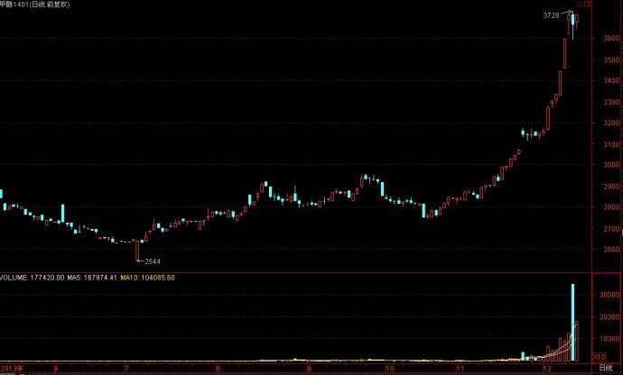
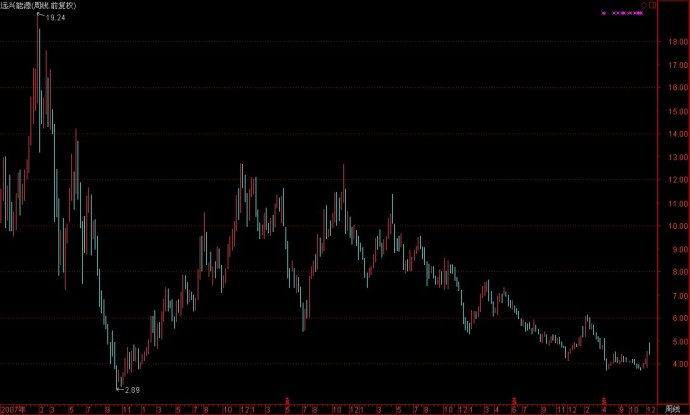
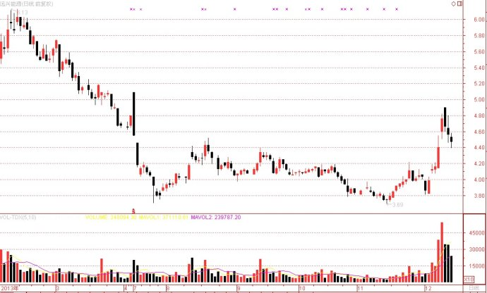
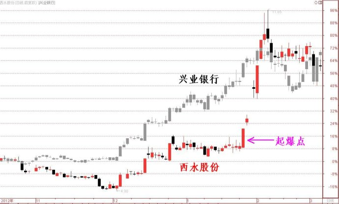

第392篇•对股市博弈的探讨
——兼论甲醇价格暴涨与远兴能源走势的关系
我在上篇谈到了“整体价值=（1+α）内在价值”的公式，有的网友也注意到了α的作用，α就是用来描述投机价值的。对于投机价值的问题，我今后还会详谈的，但今天我想借助一个实例来探讨一下股市的博弈问题。
大家知道，最近甲醇期货的价格出现了暴涨，其中1401合约的价格从每吨2700元上涨到了现在的3700元，涨幅为37%。由于商品期货的杠杆率为10倍，这个37%的涨幅，就相当于股票上涨了370%，应该算是很惊人的了。大家请看甲醇1401合约的走势图：

我想，凡是经历过2006年至2007年有色金属股暴涨的投资者，一定会对商品价格上涨十分敏感的，因为不仅是当年的有色金属股涨幅普遍达到了30～50倍，自此之后的2010年的稀土股、黄金股等涨价概念股的涨幅也是十分了得。就在今年，因草甘膦价格上涨，使得江山股份的股价又暴涨了8倍多，足以让该股与那些新兴行业的大牛股相媲美。现在，甲醇价格又出现了暴涨，它会对那些股票产生重大影响呢？
我认为，应该按照如下思路去筛选股票：其一，是甲醇占主营收入比例高的公司；其二，是每股含有甲醇吨数较多的公司；其三，是公司净利润对于甲醇价格最敏感的公司；其四，是甲醇价格上涨对于公司每股收益影响最大的公司；其五，是甲醇价格上涨对于公司股价影响最大的公司；其六，最好是低价股、低市值的公司……反正经过筛选后，我感觉远兴能源（000683）是一个较好的标的。下图是该股中期与近期走势图：
中期周线图：

近期日线图：

由上图可见，远兴能源的股价最近对于甲醇价格上涨有反应，但涨幅并不大，那么，该股未来会是怎样的走势呢？这并非一个简单的问题，它是一个很深奥的博弈问题。我今天通过分析这个博弈型案例，也是顺便给大家谈谈投机价值的问题。
在分析远兴能源与甲醇价格的关系前，我先要阐述一下市场对于信息的反应问题。一般来说，股价对于能够引发股价大幅波动的信息，会有几种不同的反应模式，它们可以从反应时间、反应力度进行划分。
首先，从反应时间来看，可以分为提前反应、同步反应、滞后反应三种情形：
提前反应：信息公开前，股价提前出现上涨，说明有少数内幕人士掌握了信息。
同步反应：信息公开时，股价同时出现上涨，市场均知晓了信息的存在，也对信息做出了反应。
滞后反应：信息公开时，股价不出现上涨，过了一段时间后才开始上涨，说明投资者对于信息的消化需要一个过程。
其次，从反应力度来看，可以分为反应过度、反应正常（合理）、反应不足三种情形：
反应过度：（1）股价涨幅超出其合理幅度，形成泡沫；（2）股价上涨方式猛烈，形成连续涨停板，甚至是连续一字涨停板，无法介入。
反应正常（合理）：（1）股价涨幅接近其合理幅度，未形成泡沫；（2）股价上涨方式正常，虽然有可能会形成连续涨停板，但可以有机会介入。
反应不足：（1）股价涨幅未达到其合理幅度，远小于市场预期；（2）股价上涨方式正常，有机会介入，但介入后很可能难以获利。
第三，若将反应时间、反应力度的几种情形进行组合，则可以组合出下表的9种反应模式：
|
|
反应过度
|
反应正常
|
反应不足
|
|
提前反应
|
提前反应过度
|
提前反应正常
|
提前反应不足
|
|
同步反应
|
同步反应过度
|
同步反应正常
|
同步反应不足
|
|
滞后反应
|
滞后反应过度
|
滞后反应正常
|
滞后反应不足
|
第四，若对于上表的9种反应模式进行分析，则对它们的可介入情况分析结论如下：
难以介入的情况：（1）提前反应，特别是提前反应过度；（2）同步反应过度。
可介入但难以获利的情况：（1）同步反应不足；（2）滞后反应不足。
可介入且能够获利的情况：（1）提前反应不足+同步反应正常；（2）提前反应不足+同步反应不足+滞后反应正常；（3）同步反应不足+滞后反应正常；（4）同步反应不足+滞后反应过度。
最佳的介入机会：提前反应不足+同步反应不足+滞后反应正常+滞后反应过度。
总之，最终的结论是，“同步反应不足”的模式，一旦演变为“滞后反应正常”，甚至是“滞后反应过度”，这其中就包含着确定性的交易机会。
我可以举几个相对应的案例：
第一个案例，是“提前反应过度”的案例，最典型的就是江山股份。当草甘膦价格刚刚上涨的时候，江山股份的股价就开始了上涨，且当草甘膦涨价幅度还不是很大的时候，江山股份的股价却出现了过度的上涨。这属于“提前反应过度”情况，之所以出现这样的情况，是因为投资者预期未来草甘膦价格还会继续上涨，而支持这种预期的依据是，草甘膦已经被国内少数几家生产商垄断，一旦开始涨价，就很可能介入新的一轮涨价周期。另外，草甘膦价格在2007年曾经达到了每吨12万元，而现在才涨到了每吨3万多元，感觉上涨空间还很大。于是，这就出现了江山股份股价涨幅大大超过了草甘膦涨幅的情况。
第二个案例，是“同步反应正常”的案例，典型的就是沧州大化。去年8月因TDI价格上涨，造成了沧州大化股价上涨，但该股股价上涨几乎与TDI价格上涨，股价只是稍稍滞后于产品价格上涨。关于沧州大化这次股价上涨，我曾在第《262篇•从沧州大化与江山股份走牛谈周期股选股思路》中做了分析。
第三个案例，是“同步反应不足”的案例，典型的就是西水股份。西水股份因持有兴业银行1.3亿股，当去年12月兴业银行股价大涨时，西水股份的股价也出现了上涨，但起初的涨幅并不大，但当兴业银行股价快翻倍时，西水股份才如梦初醒，股价出现了快速的报复性上涨。这就是由“同步反应不足”，演变为“滞后反应正常→滞后反应过度”模式。下图为两只股票当时的叠加走势图：

好了，在知道了股价对于信息的反应模式后，我们现在就来分析甲醇价格暴涨对于远兴能源股价的影响。
首先，要分析一下甲醇价格上涨对于远兴能源每股收益的影响。我查了一下财务数据，远兴能源去年年报甲醇的总收入是20亿元，毛利率为21%，则可以推算出其甲醇生产成本为约16亿元，若按照去年平均每吨甲醇3000元售价计算，则远兴能源年产甲醇约70万吨，平均每吨甲醇成本价为约2300元。现在甲醇价格为每吨3700元，假设今年平均价格能够达到每吨3700元，则远兴能源70万吨甲醇可比去年多赚70*（3700-3000）≈5（亿元）毛利，在扣除25%所得税后，增加净利润约为3.8亿元，折合每股收益为0.5元。去年年报远兴能源每股收益为0.15元，则2014年底其每股收益将达到0.65元。当然，这是一个静态的分析，其主要假设为甲醇价格将在明年全年维持在每吨3700元以上，这是有不确定性的。但我们能够得到这样的信息：只要甲醇价格保持在每吨3000元以上，则远兴能源就能够扭亏为盈。
其次，要分析一下远兴能源股价与甲醇价格的联动关系。根据以上计算，现在甲醇每吨3700元的价格足以使得远兴能源的每股收益提高到0.5元以上，以该股目前4.5元的股价来看，该股应该有较大的上涨空间，至少应该上涨到6元以上。但是，为什么该股股价现在涨不上去呢？其主要原因是，投资者认为甲醇价格上涨没有持续性，其价格今后几个月还会跌下来，这与江山化工的上涨模式正好相反——江山化工的上涨模式是，草甘膦的价格还未上涨多少，江山化工的股价却已经过度上涨；而现在甲醇价格已经大涨，但远兴能源的价格还未显著上涨。
现在大家都看清楚了吧，远兴能源股价未来能否大涨，由什么条件决定呢？就是由甲醇价格决定！其博弈模式为：若甲醇价格不再继续上涨，或者开始下跌时，则远兴能源股价基本上到此为止了，难有大的作为；若甲醇价格在经过短暂横盘后，再继续上涨，比如突破每吨4000元，则会打破投资者原先认为甲醇价格上涨难以持续的预期，于是，远兴能源股价也会被引发报复性上涨，恰如西水股份的表现。我的分析正确与否，就让我们静观甲醇价格的变化与远兴能源股价的走势吧。
特别提示：本文只是探讨博弈问题，并无任何荐股的意向，大家应该注意投资风险！